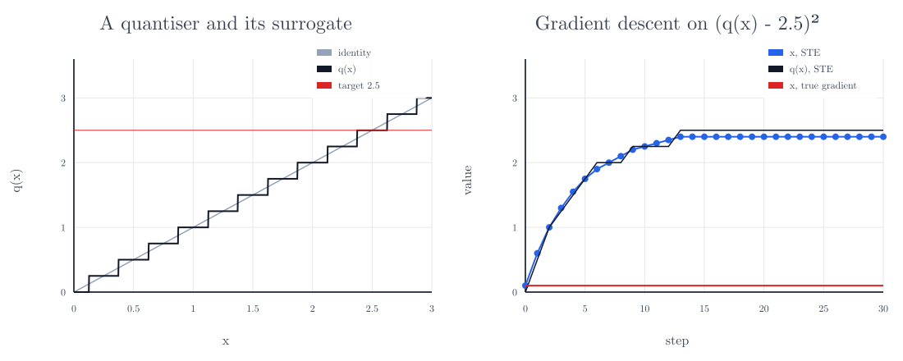
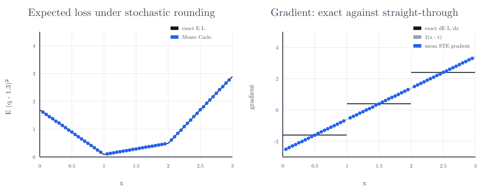
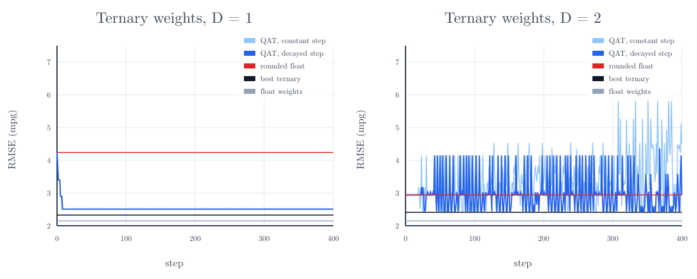

Custom Gradients: Writing the Backward Pass Yourself
Abstract
Automatic differentiation supplies the derivative of every built-in operation. Sometimes a model
needs a different backward pass. A new operation may have no derivative in the library. The
composed derivative may overflow where a direct formula would not. Or the true derivative may be
useless, as it is for rounding, which is zero almost everywhere. This report states the
contract a custom backward must meet, a vector-Jacobian product, and shows how nn::Function
pairs a forward with a hand-written backward. A custom gradient for erfc matches its closed form to eight decimals and
passes first- and second-order checks. With its sign flipped it fails gradcheck by 2.26. A naively composed \(\log(1+e^x)\) returns
NaN gradients in float32 from \(x=89\), while a custom function and nn::softplus stay exact. The straight-through
estimator (STE) moves a rounded parameter to its target in 13 steps where the true gradient never moves it. The theory section derives its bias under stochastic
rounding. The mean STE gradient is \(2(x-t)\), while the expected loss has slope \(2(x-t)+1-2p\). A Monte Carlo
check confirms both to 0.014. Following the STE stops at \(x=t\), where the expected loss is 0.21, instead of at its minimum 0.09. On mtcars,
training ten ternary weights through the quantiser cuts the error of rounding the least-squares weights from 4.24 to 2.51 mpg at \(\Delta=1\),
against an exhaustive optimum of 2.33. At \(\Delta=2\) the quantised weights flip every step instead of converging.
The library gained nn::straight_through, nn::round_ste, nn::stochastic_round_ste, nn::fake_quantize,
nn::gradient_reversal, nn::scale_gradient and nn::clip_gradient.
The problem
The reverse-mode sweep of the automatic differentiation report (autodiff, in this group) needs one backward
function per operation. Most of the time the library's own are right. Three situations call for
writing one by hand:
- A new operation. An operation implemented outside the tape, such as a special function, a call into another library or a fused kernel, has no recorded history, so gradients cannot pass through it.
- A better formula. The composed derivative of a correct forward can be numerically poor, for example when an intermediate overflows although the final value is moderate.
- A deliberate lie. The derivative of rounding, sign or argmax is zero almost everywhere, so no gradient reaches the parameters before the operation. Training a quantised network or a discrete code needs a surrogate gradient, and adversarial objectives need a gradient with its sign reversed.
This report replaces the original example examples/nn/0_foundations/0.1_tensors_graphs_sessions/custom_gradient.cpp,
a port of TensorFlow's custom-gradient example. TensorFlow looks up a gradient function per op type in a global registry
(REGISTER_GRADIENT_OP, or tf.custom_gradient in Python). In nn there is no registry: an
nn::Function carries its own backward, and nn::apply_function runs one without naming it.
The method
The contract of a backward function
An operation \(y=\phi(x_1,\dots,x_k)\) with \(y\in\mathbb R^m\) and \(x_j\in\mathbb R^{n_j}\) takes part in the backward sweep only through its vector-Jacobian products. Given the adjoint \(\bar y=\partial L/\partial y\) of its output, it must return, for each input,
with the same shape as \(x_j\), or nothing for an input that needs no gradient. Nothing else is required. In
particular the backward never needs the full Jacobian, which for an elementwise operation is diagonal, so
\(\bar x=\phi'(x)\odot\bar y\). In nn a backward receives the inputs, the outputs and the output adjoints, and returns one
tensor per input:
nn::Function erfc_fn("Erfc",
[](const Tensors& in) { return Tensors{nn::erfc(in[0])}; }, // forward
[](const Tensors& in, const Tensors& out, const Tensors& g) { // backward
return Tensors{g[0] * nn::exp(-nn::square(in[0])) * (-2 / std::sqrt(pi))};
});The forward runs with recording switched off on detached inputs, and only the custom node is put on the
tape. If the backward is written with nn operations, those are recorded under create_graph, so the custom
gradient can itself be differentiated. A backward written with raw loops would give first derivatives only.
For \(\operatorname{erfc}(x)=\tfrac{2}{\sqrt\pi}\int_x^\infty e^{-s^2}\,\mathrm ds\), the fundamental theorem of calculus gives
A wrong backward fails silently: training still runs, only worse. The check is the one from the previous
report. nn::gradcheck compares the backward with central differences of the forward in float64, and
nn::gradgradcheck does the same for the derivative of the backward.
Stable gradients
For softplus \(f(x)=\log(1+e^x)\), the composition of exp, add and log gives the derivative
\(\frac{1}{1+e^x}\cdot e^x\), evaluated as written. In float32, \(e^x\) overflows to \(\infty\) once \(x>\log(3.4\times10^{38})=88.72\). The
forward is then \(\infty\), and the backward is \(\infty/\infty\), which is NaN, although the true value is \(x\) and the true derivative
is 1. The algebraically equal forms
only ever exponentiate non-positive numbers. A custom function can use one form for the value and the other for the gradient. The same pattern stabilises log-sum-exp, norms near zero and the logit of a probability.
Straight-through estimators
Let \(q\) be a quantiser, for example \(q(x)=\Delta\,\mathrm{round}(x/\Delta)\). Its derivative is 0 except at the jumps, so in \(L(q(x))\) the gradient \(L'(q)\,q'(x)\) is 0 and \(x\) never moves. The straight-through estimator (Hinton, 2012; Bengio, Léonard and Courville,
- uses the quantised value in the forward pass and replaces \(q'\) by 1 in the backward:
The identity \(y=x+\mathrm{stop}(q(x)-x)\) implements it with no custom function: its value is \(q(x)\), and its derivative is that of \(x\).
That is nn::straight_through(x, value). nn::round_ste is the same as a custom node. nn::fake_quantize adds
the clipped variant used by TensorFlow's FakeQuant: values are clipped to the grid range \([\Delta q_{\min},\Delta q_{\max}]\), and the
gradient is zeroed outside that range, where the forward is constant.
An STE gradient is not the gradient of anything in general, so it carries no descent guarantee. Gradient descent on \(x\) stops where \(L'(q(x))=0\). That is a point where the quantised value is stationary for \(L\), not a minimiser of \(L\circ q\).
The bias of the straight-through estimator
Stochastic rounding makes this precise. Take \(\Delta=1\) and \(q_s(x)=\lfloor x\rfloor+B\) with \(B\sim\mathrm{Bernoulli}(p)\) and \(p=x-\lfloor x\rfloor\). Then \(\mathbb E\,q_s=x\), so the identity is the exact derivative of the expected quantised value. For a non-linear loss it is not the derivative of the expected loss. For \(L(q)=(q-t)^2\),
while the STE gradient has mean \(\mathbb E\,2(q_s-t)=2(x-t)\). The bias \(1-2p\) lies in \((-1,1]\). Inside each unit interval \(\mathbb E L\) is linear, because \((x-t)^2+p(1-p)\) with \(p=x-\lfloor x\rfloor\) has no \(x^2\) term. Its minimum therefore lies at an integer, where rounding is deterministic. STE descent instead stops at \(x=t\), paying the variance \(p(1-p)\) in expected loss.
Gradient reversal, scaling and clipping
Three more custom functions are the identity in the forward pass and change only the gradient. nn::gradient_reversal(x, λ)
returns \(-\lambda\bar y\). Placed between a feature extractor \(f_\theta\) and a domain classifier \(d_\psi\) (Ganin and Lempitsky, 2015), it lets one
optimiser step descend the classifier's loss in \(\psi\) while ascending it in \(\theta\), that is, solve
\(\min_\theta\max_\psi\) with ordinary gradient descent. nn::scale_gradient(x, c) returns \(c\,\bar y\), which gives per-layer learning rates or stops part of a
network learning (\(c=0\)) without changing its output. nn::clip_gradient(x, a, b) clips each element of \(\bar y\) to \([a,b]\) at one point in the graph,
unlike the global norm clipping of the optimiser reports.
Simple examples
A custom gradient for erfc
The program defines erfc with the backward derived above, written with nn operations, and differentiates it
twice. It then checks it with gradcheck and gradgradcheck, and flips the sign of the backward to see that the check
catches the error. A last line shows what happens without any custom gradient. nn::ceil records no history, so
a gradient through it is reported as an error, not returned as zero.
#include <dm/dm.hpp>
namespace nn = dm::nn;
using nn::Tensor;
using Tensors = std::vector<Tensor>;
int main() {
const double pi = std::numbers::pi;
// erfc with a hand-written backward, d/dx erfc(x) = -2/sqrt(pi) exp(-x^2), built from nn ops
// so that the backward is itself differentiable.
const nn::Function erfc_fn(
"Erfc", [](const Tensors& in) { return Tensors{nn::erfc(in[0])}; },
[pi](const Tensors& in, const Tensors&, const Tensors& g) {
return Tensors{g[0] * nn::exp(-nn::square(in[0])) * (-2.0 / std::sqrt(pi))};
});
const std::vector<double> xs{-1.5, -0.5, 0.0, 0.5, 1.5};
auto x = nn::from_vector(xs, {5}).requires_grad_();
const Tensor y = erfc_fn(x);
const Tensor g1 = nn::grad(nn::sum(y), {x}, {.create_graph = true})[0];
const Tensor g2 = nn::grad(nn::sum(g1), {x})[0];
std::print("| x | erfc(x) | custom gradient | closed form | central difference, h = 1e-5 | second derivative | closed form 4x e^(-x²)/√π |\n");
std::print("| ---: | ---: | ---: | ---: | ---: | ---: | ---: |\n");
const auto gv = g1.to_vector<double>(), g2v = g2.to_vector<double>(), yv = y.to_vector<double>();
for (std::size_t i = 0; i < xs.size(); ++i) {
const double xi = xs[i], h = 1e-5;
std::print("| {:.1f} | {:.6f} | {:.8f} | {:.8f} | {:.8f} | {:.8f} | {:.8f} |\n", xi, yv[i], gv[i],
-2 / std::sqrt(pi) * std::exp(-xi * xi), (std::erfc(xi + h) - std::erfc(xi - h)) / (2 * h), g2v[i],
4 * xi * std::exp(-xi * xi) / std::sqrt(pi));
}
const auto r1 = nn::gradcheck([&](const Tensors& in) { return erfc_fn(in[0]); }, {x.detach().clone().requires_grad_()});
const auto r2 = nn::gradgradcheck([&](const Tensors& in) { return erfc_fn(in[0]); }, {x.detach().clone().requires_grad_()});
std::print("\n- gradcheck: ok = {}, largest error {:.1e}; gradgradcheck: ok = {}, largest error {:.1e}\n", r1.ok,
r1.max_abs_error, r2.ok, r2.max_abs_error);
// A deliberately wrong backward is caught by gradcheck.
const nn::Function wrong(
"ErfcWrongSign", [](const Tensors& in) { return Tensors{nn::erfc(in[0])}; },
[pi](const Tensors& in, const Tensors&, const Tensors& g) {
return Tensors{g[0] * nn::exp(-nn::square(in[0])) * (2.0 / std::sqrt(pi))};
});
const auto bad = nn::gradcheck([&](const Tensors& in) { return wrong(in[0]); }, {x.detach().clone().requires_grad_()});
std::print("- the same backward with the sign flipped: ok = {}, largest error {:.3f}\n", bad.ok, bad.max_abs_error);
std::print(" - first failure: {}\n", bad.message);
// The tape shows the custom node.
auto z = nn::scalar(0.5, nn::DType::Float64).requires_grad_();
std::print("\n{}\n", nn::tape({nn::square(erfc_fn(z))}, {{z, "z"}}).to_markdown());
// Ops with no useful derivative record no history: a gradient through them is an error.
try {
auto c = nn::tensor({0.5}, {1}, nn::DType::Float64).requires_grad_();
(void)nn::grad(nn::sum(nn::ceil(c)), {c});
} catch (const std::exception& e) {
std::print("\n- gradient through ceil: `{}`\n", e.what());
}
}| x | erfc(x) | custom gradient | closed form | central difference, h = 1e-5 | second derivative | closed form 4x e^(-x²)/√π |
|---|---|---|---|---|---|---|
| -1.5 | 1.966105 | -0.11893029 | -0.11893029 | -0.11893029 | -0.35679087 | -0.35679087 |
| -0.5 | 1.520500 | -0.87878258 | -0.87878258 | -0.87878258 | -0.87878258 | -0.87878258 |
| 0.0 | 1.000000 | -1.12837917 | -1.12837917 | -1.12837917 | 0.00000000 | 0.00000000 |
| 0.5 | 0.479500 | -0.87878258 | -0.87878258 | -0.87878258 | 0.87878258 | 0.87878258 |
| 1.5 | 0.033895 | -0.11893029 | -0.11893029 | -0.11893029 | 0.35679087 | 0.35679087 |
- gradcheck: ok = true, largest error 6.0e-11; gradgradcheck: ok = true, largest error 1.0e-10
- the same backward with the sign flipped: ok = false, largest error 2.257
- first failure: input 0, jacobian entry 0: analytic 0.11893 vs numeric -0.11893
| Node | Operation | Shape | Inputs |
|---|---|---|---|
| Square_168 | Square | [] | Erfc_167 |
| Erfc_167 | Erfc | [] | z |
| z | Leaf | [] |
- gradient through ceil:
grad: output 0 does not require grad (it has no history connecting it to any input)
The custom gradient agrees with the closed form and with central differences to every printed decimal. The second derivative,
which differentiates the recorded backward, matches \(4xe^{-x^2}/\sqrt\pi\) at all five points. Both checks pass, with largest errors
of \(6\times10^{-11}\) and \(10^{-10}\), the size expected of central differences in float64. With the sign flipped, the check fails at the first entry,
\(0.11893\) against \(-0.11893\), and the largest error, 2.257, is twice the slope at \(x=0\), \(4/\sqrt\pi\). On the tape the custom op appears as one
node, Erfc, between the leaf and the Square that uses it.
Softplus three ways
The program evaluates \(\log(1+e^x)\) and its gradient in float32, composed naively, as a custom function with the stable forms above,
and with the built-in nn::softplus.
#include <dm/dm.hpp>
namespace nn = dm::nn;
using nn::Tensor;
using Tensors = std::vector<Tensor>;
int main() {
// log(1 + e^x) three ways, in float32.
// Naive: composed from exp, add and log; autograd differentiates the composition.
const auto naive = [](const Tensor& x) { return nn::log(nn::exp(x) + 1.0); };
// Custom: forward max(x, 0) + log1p(e^-|x|), backward g * sigmoid(x) with sigmoid
// evaluated as 1/(1+e^-x) for x >= 0 and e^x/(1+e^x) otherwise, never overflowing.
const nn::Function log1pexp(
"Log1pExp",
[](const Tensors& in) { return Tensors{nn::relu(in[0]) + nn::log1p(nn::exp(-nn::abs(in[0])))}; },
[](const Tensors& in, const Tensors&, const Tensors& g) {
const Tensor e = nn::exp(-nn::abs(in[0])); // in (0, 1]
const Tensor s = nn::where(nn::greater_equal(in[0], 0.0), 1.0 / (e + 1.0), e / (e + 1.0));
return Tensors{g[0] * s};
});
std::print("| x | naive value | naive gradient | custom value | custom gradient | nn::softplus value | nn::softplus gradient |\n");
std::print("| ---: | ---: | ---: | ---: | ---: | ---: | ---: |\n");
for (double xv : {-100.0, -20.0, 0.0, 20.0, 88.0, 89.0, 100.0}) {
auto eval = [&](auto&& f) {
auto x = nn::scalar(xv).requires_grad_(); // float32
const Tensor y = f(x);
return std::pair{y.item(), nn::grad(y, {x})[0].item()};
};
const auto [a, ga] = eval(naive);
const auto [b, gb] = eval([&](const Tensor& x) { return log1pexp(x); });
const auto [c, gc] = eval([](const Tensor& x) { return nn::softplus(x); });
std::print("| {:g} | {:.6g} | {:.6g} | {:.6g} | {:.6g} | {:.6g} | {:.6g} |\n", xv, a, ga, b, gb, c, gc);
}
std::print("\nLargest float32 value: {:.4g}; log of it: {:.4f}\n", std::numeric_limits<float>::max(),
std::log(std::numeric_limits<float>::max()));
}| x | naive value | naive gradient | custom value | custom gradient | nn::softplus value | nn::softplus gradient |
|---|---|---|---|---|---|---|
| -100 | 0 | 3.78351e-44 | 3.78351e-44 | 3.78351e-44 | 3.78351e-44 | 3.78351e-44 |
| -20 | 0 | 2.06115e-09 | 2.06115e-09 | 2.06115e-09 | 2.06115e-09 | 2.06115e-09 |
| 0 | 0.693147 | 0.5 | 0.693147 | 0.5 | 0.693147 | 0.5 |
| 20 | 20 | 1 | 20 | 1 | 20 | 1 |
| 88 | 88 | 1 | 88 | 1 | 88 | 1 |
| 89 | inf | -nan | 89 | 1 | 89 | 1 |
| 100 | inf | -nan | 100 | 1 | 100 | 1 |
Largest float32 value: 3.403e+38; log of it: 88.7228
The naive composition fails in two different ways. For \(x\ge89\) the forward is \(\infty\) and the gradient is NaN, because \(e^{89}\) exceeds
the largest float32, \(e^{88.72}\). For \(x\le-20\) the forward returns 0, because \(1+e^{-20}\) rounds to 1, although its gradient is still
accurate. The custom function returns the correct value and gradient everywhere, down to \(3.8\times10^{-44}\), a subnormal float32. The built-in
nn::softplus agrees with it exactly, because the library already uses these forms. Its backward is g * sigmoid(x).
Training through rounding
Gradient descent with step 0.1 on \(L=(q(x)-2.5)^2\), \(q(x)=0.25\,\mathrm{round}(4x)\), from \(x=0.1\). The quantised value is
nn::fake_quantize(x, 0.25, -40, 40), whose backward is the STE. For comparison, the same descent uses the true derivative of nn::round.
#include <dm/dm.hpp>
namespace nn = dm::nn;
using nn::Tensor;
int main() {
std::filesystem::create_directories("build");
// Quantise x to the grid 0.25 Z and push the quantised value towards 2.5.
const double target = 2.5, lr = 0.1, step = 0.25;
auto q_true = [&](const Tensor& x) { return nn::round(x / step) * step; }; // derivative 0 a.e.
auto q_ste = [&](const Tensor& x) { return nn::fake_quantize(x, step, -40, 40); }; // derivative 1 on the grid range
std::print("| step | x (STE) | q(x) | loss | dloss/dx (STE) | x (true gradient) | dloss/dx (true) |\n");
std::print("| ---: | ---: | ---: | ---: | ---: | ---: | ---: |\n");
double xs = 0.1, xt = 0.1;
std::vector<double> ks, xsv, qsv, xtv;
for (int k = 0; k <= 30; ++k) {
auto a = nn::scalar(xs, nn::DType::Float64).requires_grad_();
const Tensor qa = q_ste(a), la = nn::square(qa - target);
const double ga = nn::grad(la, {a})[0].item();
auto b = nn::scalar(xt, nn::DType::Float64).requires_grad_();
const Tensor lb = nn::square(q_true(b) - target);
// round records no history, so the gradient is reported as unused: zero.
const auto gbv = lb.requires_grad() ? nn::grad(lb, {b}, {.allow_unused = true})[0] : Tensor();
const double gb = gbv.defined() ? gbv.item() : 0.0;
ks.push_back(k), xsv.push_back(xs), qsv.push_back(qa.item()), xtv.push_back(xt);
if (k % 3 == 0 || k <= 6)
std::print("| {} | {:.4f} | {:.2f} | {:.4f} | {:.4f} | {:.4f} | {:.4f} |\n", k, xs, qa.item(), la.item(), ga, xt, gb);
xs -= lr * ga;
xt -= lr * gb;
}
auto left = dm::graphics::RPlot::create();
std::vector<double> gx, gq;
for (int i = 0; i <= 1200; ++i) {
const double x = 3.0 * i / 1200;
gx.push_back(x);
gq.push_back(step * std::nearbyint(x / step));
}
left.lines({0, 3}, {0, 3}, "identity", dm::graphics::RGB{148, 163, 184}, 1.5);
left.lines(gx, gq, "q(x)", dm::graphics::RGB{17, 24, 39}, 2.0);
left.lines({0, 3}, {target, target}, "target 2.5", dm::graphics::RGB{220, 38, 38}, 1.0);
left.x_limits(0, 3).y_limits(0, 3.6).title("A quantiser and its surrogate").x_label("x").y_label("q(x)");
auto right = dm::graphics::RPlot::create();
right.lines(ks, xsv, "x, STE", dm::graphics::RGB{37, 99, 235}, 2.0).points(ks, xsv, "", dm::graphics::RGB{37, 99, 235}, 4.0);
right.lines(ks, qsv, "q(x), STE", dm::graphics::RGB{17, 24, 39}, 1.5);
right.lines(ks, xtv, "x, true gradient", dm::graphics::RGB{220, 38, 38}, 2.0);
right.x_limits(0, 30).y_limits(0, 3.6).title("Gradient descent on (q(x) - 2.5)²").x_label("step").y_label("value");
auto fig = dm::graphics::RLayout::create(1, 2);
fig.add(left);
fig.add(right);
fig.size(1100, 440).fit_panels();
fig.save_svg("build/custom_gradient_ste.svg");
}| step | x (STE) | q(x) | loss | dloss/dx (STE) | x (true gradient) | dloss/dx (true) |
|---|---|---|---|---|---|---|
| 0 | 0.1000 | 0.00 | 6.2500 | -5.0000 | 0.1000 | 0.0000 |
| 1 | 0.6000 | 0.50 | 4.0000 | -4.0000 | 0.1000 | 0.0000 |
| 2 | 1.0000 | 1.00 | 2.2500 | -3.0000 | 0.1000 | 0.0000 |
| 3 | 1.3000 | 1.25 | 1.5625 | -2.5000 | 0.1000 | 0.0000 |
| 4 | 1.5500 | 1.50 | 1.0000 | -2.0000 | 0.1000 | 0.0000 |
| 5 | 1.7500 | 1.75 | 0.5625 | -1.5000 | 0.1000 | 0.0000 |
| 6 | 1.9000 | 2.00 | 0.2500 | -1.0000 | 0.1000 | 0.0000 |
| 9 | 2.2000 | 2.25 | 0.0625 | -0.5000 | 0.1000 | 0.0000 |
| 12 | 2.3500 | 2.25 | 0.0625 | -0.5000 | 0.1000 | 0.0000 |
| 15 | 2.4000 | 2.50 | 0.0000 | 0.0000 | 0.1000 | 0.0000 |
| 18 | 2.4000 | 2.50 | 0.0000 | 0.0000 | 0.1000 | 0.0000 |
| 21 | 2.4000 | 2.50 | 0.0000 | 0.0000 | 0.1000 | 0.0000 |
| 24 | 2.4000 | 2.50 | 0.0000 | 0.0000 | 0.1000 | 0.0000 |
| 27 | 2.4000 | 2.50 | 0.0000 | 0.0000 | 0.1000 | 0.0000 |
| 30 | 2.4000 | 2.50 | 0.0000 | 0.0000 | 0.1000 | 0.0000 |

With the true gradient, \(x\) never moves. The loss is 6.25 at every step, and the gradient is exactly zero, reported as
unused because round records no history. With the STE the gradient is \(2(q-2.5)\). The parameter climbs while the quantised value lags behind it,
and from step 13, at \(x=2.4\), \(q(x)=2.5\) exactly. The loss is then 0 and the STE gradient 0, so the iteration stops inside the cell
\([2.375,2.625)\) that rounds to the target.
Checking the theory
The bias of the straight-through gradient
For 57 non-integer points \(x\) in \((0,3)\) and \(t=1.3\), the program draws 20 000 stochastic roundings with nn::stochastic_round_ste
and records three Monte Carlo means: \(q_s\), the loss, and the STE gradient obtained by nn::grad. It then compares them with the formulas
derived above.
#include <dm/dm.hpp>
namespace nn = dm::nn;
using nn::Tensor;
int main() {
std::filesystem::create_directories("build");
// Stochastic rounding q_s(x) = floor(x) + Bernoulli(p), p = x - floor(x), and L = (q - t)^2.
// Exact: E L = (x - t)^2 + p(1 - p), so d E L / dx = 2(x - t) + 1 - 2p,
// while the straight-through gradient has mean E[2(q - t)] = 2(x - t).
const double t = 1.3;
const std::int64_t M = 20000;
nn::Generator gen(2026);
std::vector<double> xs, el_exact, el_mc, d_exact, ste_mc, ste_line, det_ste;
double worst_mean = 0, worst_el = 0, worst_ste = 0;
for (int i = 1; i < 60; ++i) {
const double xv = 0.05 * i;
if (std::abs(xv - std::round(xv)) < 1e-9) continue; // integers: p = 0, nothing random
const double p = xv - std::floor(xv);
auto x = nn::scalar(xv, nn::DType::Float64).requires_grad_();
const Tensor q = nn::stochastic_round_ste(x * nn::ones({M}, nn::DType::Float64), gen);
const Tensor L = nn::mean(nn::square(q - t));
const double g = nn::grad(L, {x})[0].item();
xs.push_back(xv);
el_exact.push_back((xv - t) * (xv - t) + p * (1 - p));
el_mc.push_back(L.item());
d_exact.push_back(2 * (xv - t) + 1 - 2 * p);
ste_mc.push_back(g);
ste_line.push_back(2 * (xv - t));
det_ste.push_back(2 * (std::nearbyint(xv) - t));
worst_mean = std::max(worst_mean, std::abs(nn::mean(q).item() - xv));
worst_el = std::max(worst_el, std::abs(el_mc.back() - el_exact.back()));
worst_ste = std::max(worst_ste, std::abs(g - ste_line.back()));
}
double worst_bias = 0;
for (std::size_t i = 0; i < xs.size(); ++i) worst_bias = std::max(worst_bias, std::abs(ste_mc[i] - d_exact[i]));
std::print("{} points x in (0, 3), {} draws each, t = {}:\n\n", xs.size(), M, t);
std::print("- largest |mean of q_s(x) - x| = {:.4f} (standard error at most {:.4f})\n", worst_mean, 0.5 / std::sqrt(double(M)));
std::print("- largest |Monte Carlo E L - (x - t)² - p(1 - p)| = {:.4f}\n", worst_el);
std::print("- largest |mean straight-through gradient - 2(x - t)| = {:.4f}\n", worst_ste);
std::print("- largest |mean straight-through gradient - dE L/dx| = {:.4f} (the bias 1 - 2p has maximum 1)\n", worst_bias);
// Where each is minimised: STE descent stops where its mean gradient is zero, x = t.
auto exact_el = [&](double x) { const double p = x - std::floor(x); return (x - t) * (x - t) + p * (1 - p); };
double best_x = 0, best_v = 1e300;
for (int i = 0; i <= 30000; ++i) {
const double x = 3.0 * i / 30000;
if (exact_el(x) < best_v) best_v = exact_el(x), best_x = x;
}
std::print("- straight-through descent stops at x = t = {}, where E L = {:.4f}; E L is smallest at x = {:.4f}, where it is {:.4f}\n", t,
exact_el(t), best_x, best_v);
auto left = dm::graphics::RPlot::create();
std::vector<double> fx, fe, fd;
for (int i = 0; i <= 600; ++i) {
const double x = 3.0 * i / 600, p = x - std::floor(x);
fx.push_back(x), fe.push_back((x - t) * (x - t) + p * (1 - p)), fd.push_back(2 * (x - t) + 1 - 2 * p);
}
left.lines(fx, fe, "exact E L", dm::graphics::RGB{17, 24, 39}, 2.0);
left.points(xs, el_mc, "Monte Carlo", dm::graphics::RGB{37, 99, 235}, 4.0);
left.x_limits(0, 3).y_limits(0, 4.5).title("Expected loss under stochastic rounding").x_label("x").y_label("E (q - 1.3)²");
auto right = dm::graphics::RPlot::create();
// Split the sawtooth at the integers so no vertical jump is drawn.
for (int seg = 0; seg < 3; ++seg) {
std::vector<double> sx, sy;
for (std::size_t i = 0; i < fx.size(); ++i)
if (fx[i] >= seg && fx[i] < seg + 1) sx.push_back(fx[i]), sy.push_back(fd[i]);
right.lines(sx, sy, seg == 0 ? "exact dE L/dx" : "", dm::graphics::RGB{17, 24, 39}, 2.0);
}
right.lines({0, 3}, {-2 * t, 2 * (3 - t)}, "2(x - t)", dm::graphics::RGB{148, 163, 184}, 1.5);
right.points(xs, ste_mc, "mean STE gradient", dm::graphics::RGB{37, 99, 235}, 4.0);
right.x_limits(0, 3).y_limits(-3, 5).title("Gradient: exact against straight-through").x_label("x").y_label("gradient");
auto fig = dm::graphics::RLayout::create(1, 2);
fig.add(left);
fig.add(right);
fig.size(1100, 440).fit_panels();
fig.save_svg("build/custom_gradient_bias.svg");
}57 points x in (0, 3), 20000 draws each, t = 1.3:
- largest mean of q_s(x) - x = 0.0070 (standard error at most 0.0035)
- largest Monte Carlo E L - (x - t)² - p(1 - p) = 0.0105
- largest mean straight-through gradient - 2(x - t) = 0.0139
- largest mean straight-through gradient - dE L/dx = 0.9034 (the bias 1 - 2p has maximum 1)
- straight-through descent stops at x = t = 1.3, where E L = 0.2100; E L is smallest at x = 1.0000, where it is 0.0900

Each prediction holds to Monte Carlo error. The mean of \(q_s(x)\) equals \(x\), the mean loss equals \((x-t)^2+p(1-p)\), and the mean STE gradient equals \(2(x-t)\). Over 57 points the largest deviations are 0.007, 0.011 and 0.014, about two to three standard errors. The STE gradient differs from the derivative of the expected loss by up to 0.90, close to the maximum 1 of the bias \(1-2p\). The right panel shows the consequence. The exact derivative is \(-1.6\) on \((0,1)\) and \(+0.4\) on \((1,2)\), so the expected loss has its minimum 0.09 at the integer \(x=1\). The mean STE gradient crosses zero at \(x=1.3\), where the expected loss is 0.21, more than twice as large. Unbiased rounding does not make the STE an unbiased gradient.
A dataset: ternary weights for mtcars
Quantisation-aware training (QAT) keeps float shadow weights, quantises them in every forward pass, and updates the shadow weights with the STE gradient. The test fits mpg on all ten other mtcars columns, standardised, with every weight restricted to \(\{-\Delta,0,\Delta\}\), ternary weights as in Li, Zhang and Liu (2016). The predictors are centred, so the intercept is \(\overline{\mathrm{mpg}}\) whatever the weights. With \(3^{10}=59\,049\) possible weight vectors the best ternary model can be found exhaustively, which gives QAT an exact target. The baseline is post-training quantisation (PTQ): fit in float, then round each weight to the grid.
#include <dm/dm.hpp>
namespace nn = dm::nn;
using nn::Tensor;
int main() {
std::filesystem::create_directories("build");
const auto F64 = nn::DType::Float64;
// mpg on all ten other mtcars columns, standardised, with ternary weights {-D, 0, D}.
const auto cars = dm::datasets::mtcars();
const std::vector<std::string> names{"cyl", "disp", "hp", "drat", "wt", "qsec", "vs", "am", "gear", "carb"};
const auto mpg = cars.get_column<double>("mpg").values();
const std::int64_t n = static_cast<std::int64_t>(mpg.size()), p = static_cast<std::int64_t>(names.size());
std::vector<double> Z(static_cast<std::size_t>(n * p));
for (std::int64_t j = 0; j < p; ++j) {
const auto c = cars.get_column<double>(names[j]).values();
const double m = std::accumulate(c.begin(), c.end(), 0.0) / n;
double ss = 0;
for (double v : c) ss += (v - m) * (v - m);
const double s = std::sqrt(ss / (n - 1));
for (std::int64_t i = 0; i < n; ++i) Z[i * p + j] = (c[i] - m) / s;
}
const double ybar = std::accumulate(mpg.begin(), mpg.end(), 0.0) / n;
const Tensor X = nn::from_vector(Z, {n, p});
const Tensor y = nn::from_vector(mpg, {n, 1}) - ybar;
// Predictors are centred, so the best intercept is mean(mpg) for any weights.
const auto mse = [&](const Tensor& w) { return nn::mean(nn::square(nn::matmul(X, nn::reshape(w, {p, 1})) - y)); };
const auto rmse = [&](const std::vector<double>& w) {
nn::NoGradGuard guard;
return std::sqrt(mse(nn::from_vector(w, {p})).item());
};
// Float least squares, from the normal equations solved by gradient descent to convergence.
Tensor wf = nn::zeros({p}, F64);
for (int k = 0; k < 20000; ++k) {
auto l = wf.detach().requires_grad_();
wf = (l - 0.05 * nn::grad(mse(l), {l})[0]).detach();
}
const auto wfv = wf.to_vector<double>();
const auto ols = dm::stats::LM(dm::formula("mpg ~ cyl + disp + hp + drat + wt + qsec + vs + am + gear + carb"), cars);
std::print("Float least squares: RMSE {:.4f} (stats::LM residual RMSE {:.4f})\n\n", rmse(wfv),
std::sqrt(ols.rss() / n));
std::print("| D | rounded float weights (PTQ) | QAT, constant step: final | best visited | QAT, decayed step: final | optimum over all 3^10 | PTQ weights / D | QAT (decayed) final / D | optimum / D |\n");
std::print("| ---: | ---: | ---: | ---: | ---: | ---: | :--- | :--- | :--- |\n");
std::vector<std::vector<double>> curves, curves_d;
std::vector<double> ref_ptq, ref_opt;
auto as_ints = [](const std::vector<double>& w, double D) {
std::string s;
for (double v : w) s += (s.empty() ? "" : " ") + std::format("{:+d}", static_cast<int>(std::lround(v / D)));
return s;
};
for (double D : {0.5, 1.0, 2.0}) {
std::vector<double> ptq(wfv.size());
for (std::size_t j = 0; j < ptq.size(); ++j) ptq[j] = D * std::clamp(std::nearbyint(wfv[j] / D), -1.0, 1.0);
// Quantisation-aware training: float shadow weights, ternary weights in the forward pass.
// Constant step 0.01, and the same step decayed as 0.01 / (1 + k / 50).
auto qat = [&](bool decay, std::vector<double>& curve, std::vector<double>& best_w, double& best, Tensor& shadow) {
shadow = wf.clone();
best = 1e300;
for (int k = 0; k < 4000; ++k) {
auto l = shadow.detach().requires_grad_();
const Tensor q = nn::fake_quantize(l, D, -1, 1);
const Tensor loss = mse(q);
curve.push_back(std::sqrt(loss.item()));
if (curve.back() < best) best = curve.back(), best_w = q.to_vector<double>();
const double lr = decay ? 0.01 / (1.0 + k / 50.0) : 0.01;
shadow = (l - lr * nn::grad(loss, {l})[0]).detach();
}
};
std::vector<double> curve, best_w, curve_d, best_wd;
double best = 0, best_d = 0;
Tensor shadow, shadow_d;
qat(false, curve, best_w, best, shadow);
qat(true, curve_d, best_wd, best_d, shadow_d);
// Exhaustive search over the 59049 ternary weight vectors.
std::vector<double> opt(p), cur(p);
double opt_v = 1e300;
for (int c = 0; c < 59049; ++c) {
int r = c;
for (std::int64_t j = 0; j < p; ++j) cur[j] = D * (r % 3 - 1), r /= 3;
double ss = 0;
for (std::int64_t i = 0; i < n; ++i) {
double f = 0;
for (std::int64_t j = 0; j < p; ++j) f += Z[i * p + j] * cur[j];
ss += (f + ybar - mpg[i]) * (f + ybar - mpg[i]);
}
if (ss < opt_v) opt_v = ss, opt = cur;
}
std::vector<double> final_d;
{ nn::NoGradGuard g; final_d = nn::fake_quantize(shadow_d, D, -1, 1).to_vector<double>(); }
std::print("| {} | {:.4f} | {:.4f} | {:.4f} | {:.4f} | {:.4f} | {} | {} | {} |\n", D, rmse(ptq), curve.back(), best,
rmse(final_d), std::sqrt(opt_v / n), as_ints(ptq, D), as_ints(final_d, D), as_ints(opt, D));
if (D == 2.0) {
const auto sv = shadow.to_vector<double>();
int stuck = 0;
for (double v : sv) stuck += std::abs(v) > D;
std::print("\nAt D = 2, {} of the 10 shadow weights end outside [-2, 2], where the clipped gradient is zero.\n\n", stuck);
}
curves.push_back(curve);
curves_d.push_back(curve_d);
ref_ptq.push_back(rmse(ptq));
ref_opt.push_back(std::sqrt(opt_v / n));
}
std::print("Weights listed in column order {}.\n", [&] { std::string s; for (auto& c : names) s += (s.empty() ? "" : ", ") + c; return s; }());
std::vector<dm::graphics::RPlot> panels;
const double Ds[] = {1.0, 2.0};
for (int r = 0; r < 2; ++r) {
auto clip_curve = [](const std::vector<double>& c) {
std::vector<double> out(c.begin(), c.begin() + 401);
for (auto& v : out) v = std::min(v, 5.95);
return out;
};
const auto cc = clip_curve(curves[r + 1]), cd = clip_curve(curves_d[r + 1]);
std::vector<double> ks(cc.size());
std::iota(ks.begin(), ks.end(), 0.0);
auto plot = dm::graphics::RPlot::create();
plot.lines(ks, cc, "QAT, constant step", dm::graphics::RGB{147, 197, 253}, 1.5);
plot.lines(ks, cd, "QAT, decayed step", dm::graphics::RGB{37, 99, 235}, 2.0);
plot.lines({0, 400}, {ref_ptq[r + 1], ref_ptq[r + 1]}, "rounded float", dm::graphics::RGB{220, 38, 38}, 1.5);
plot.lines({0, 400}, {ref_opt[r + 1], ref_opt[r + 1]}, "best ternary", dm::graphics::RGB{17, 24, 39}, 1.5);
plot.lines({0, 400}, {rmse(wfv), rmse(wfv)}, "float weights", dm::graphics::RGB{148, 163, 184}, 1.5);
plot.x_limits(0, 400).y_limits(2, 7.5).title(std::format("Ternary weights, D = {:g}", Ds[r])).x_label("step").y_label("RMSE (mpg)");
panels.push_back(plot);
}
auto fig = dm::graphics::RLayout::create(1, 2);
fig.add(panels[0]);
fig.add(panels[1]);
fig.size(1100, 440).fit_panels();
fig.save_svg("build/custom_gradient_qat.svg");
}Float least squares: RMSE 2.1469 (stats::LM residual RMSE 2.1469)
| D | rounded float weights (PTQ) | QAT, constant step: final | best visited | QAT, decayed step: final | optimum over all 3^10 | PTQ weights / D | QAT (decayed) final / D | optimum / D |
|---|---|---|---|---|---|---|---|---|
| 0.5 | 4.2655 | 3.6391 | 3.6391 | 3.6391 | 3.0226 | +0 +1 -1 +1 -1 +1 +0 +1 +1 -1 | -1 +1 -1 +1 -1 +1 +1 +1 +1 -1 | -1 -1 -1 +1 -1 +1 +1 +1 +1 -1 |
| 1 | 4.2376 | 2.5095 | 2.5075 | 2.5075 | 2.3253 | +0 +1 -1 +0 -1 +1 +0 +1 +0 +0 | -1 +1 -1 +1 -1 +1 +0 +1 +1 -1 | -1 -1 -1 +1 -1 +0 +0 +1 +0 -1 |
| 2 | 2.9401 | 4.6690 | 2.4351 | 3.2716 | 2.4116 | +0 +1 -1 +0 -1 +1 +0 +1 +0 +0 | +0 +0 -1 +0 -1 +1 +0 +1 +0 -1 | +0 +0 -1 +0 -1 +0 +0 +0 +1 -1 |
At D = 2, 1 of the 10 shadow weights end outside [-2, 2], where the clipped gradient is zero.
Weights listed in column order cyl, disp, hp, drat, wt, qsec, vs, am, gear, carb.

The ten float weights fit with RMSE 2.147 mpg, the same as stats::LM. Rounding them is a poor ternary model at \(\Delta=0.5\) and 1. Several
of the large float weights have opposite signs on correlated predictors (cyl, disp, hp and wt), and rounding them
independently keeps cancelling pairs or drops them to 0. The RMSE nearly doubles, to 4.27 and 4.24. QAT sees the quantised model's error, so it adjusts all
weights jointly. At \(\Delta=1\) it reaches 2.51 within about ten steps and stays there, closing 90% of the gap between PTQ and the exhaustive optimum,
2.33. At \(\Delta=0.5\) it reaches 3.64 against an optimum of 3.02. Neither finds the optimum, which in both cases gives disp the opposite sign. Moving that weight from \(+\Delta\)
to \(-\Delta\) means passing through 0, and STE descent from the float fit never makes that move.
At \(\Delta=2\) PTQ is already good (2.94), and QAT does not converge. Some shadow weights sit at a rounding threshold \(\pm\Delta/2\), and the STE gradient there does not vanish but changes sign as the quantised weight flips. The iterate then alternates between two ternary models at every step, a limit cycle that a smaller step slows down but does not remove: with the decayed step the final model is still worse than PTQ (3.27 against 2.94). In the constant-step run one shadow weight also left \([-2,2]\), where the clipped STE gradient is zero, and was stuck there. The best model visited, 2.435, is within 1% of the optimum. In practice QAT keeps the best quantised checkpoint on validation data, or anneals the quantiser, rather than trusting the last iterate.
Straight-through ceiling with stop-gradient
The expression x + stop_gradient(ceil(x) - x) evaluates to the
ceiling, while its derivative with respect to the input is one. A loss
that squares this output therefore sends twice the rounded output back
to the input. The zero at the last element is a forward value, so its
loss gradient is also zero.
#include <dm/dm.hpp>
int main() {
namespace n=dm::nn;
auto x=n::tensor({.2,1.7,-.4},{3},n::DType::Float64).requires_grad_();
const auto y=x+n::stop_gradient(n::ceil(x)-x);
const auto gradient=n::grad(n::sum(n::square(y)),{x}).front();
if(n::max(n::abs(y-n::ceil(x))).item()>1e-14 ||
n::max(n::abs(gradient-n::tensor({2,4,0},{3},n::DType::Float64))).item()>1e-14)
throw std::runtime_error("The ceiling or straight-through derivative differed");
std::print("Ceiling {}; straight-through squared-loss derivative {}.\n",
y.to_vector<double>(),gradient.to_vector<double>());
}Ceiling [1, 2, 0]; straight-through squared-loss derivative [2, 4, 0].
Conclusion
A custom gradient is a vector-Jacobian product supplied by hand. Writing it with tensor operations makes it differentiable
again, and gradcheck with gradgradcheck is the test that catches a wrong one: here a sign error failed the check by 2.26. Custom
gradients serve three purposes. They extend the tape to new operations. They give stable formulas where the composed derivative overflows: the naive softplus
gradient was NaN from \(x=89\) in float32. And they give deliberately altered gradients: straight-through estimators, gradient reversal, scaling and clipping.
The altered gradients need the most care, because they are not gradients of any objective. The straight-through estimator moved a rounded parameter to its target where the true gradient could not move it, and on mtcars it found ternary weights far better than rounding a float fit. Its stopping points are where the quantised loss is stationary, not where the expected loss is smallest. Under stochastic rounding its bias is \(1-2p\), confirmed by simulation. Near rounding thresholds it can cycle instead of converge, as it did at \(\Delta=2\), so the last iterate is not a reliable answer.
References
- G. Hinton (2012). Neural Networks for Machine Learning, lecture 15b (Coursera); the straight-through estimator.
- Y. Bengio, N. Léonard and A. Courville (2013). "Estimating or propagating gradients through stochastic neurons for conditional computation". arXiv:1308.3432
- B. Jacob, S. Kligys, B. Chen, M. Zhu, M. Tang, A. Howard, H. Adam and D. Kalenichenko (2018). "Quantization and training of neural networks for efficient integer-arithmetic-only inference". CVPR, 2704–2713. doi:10.1109/CVPR.2018.00286
- F. Li, B. Zhang and B. Liu (2016). "Ternary weight networks". arXiv:1605.04711
- Y. Ganin and V. Lempitsky (2015). "Unsupervised domain adaptation by backpropagation". ICML, PMLR 37, 1180–1189.
- P. Yin, J. Lyu, S. Zhang, S. Osher, Y. Qi and J. Xin (2019). "Understanding straight-through estimator in training activation quantized neural nets". ICLR.
- S. Gupta, A. Agrawal, K. Gopalakrishnan and P. Narayanan (2015). "Deep learning with limited numerical precision". ICML, PMLR 37, 1737–1746. (Stochastic rounding.)
- M. Abadi et al. (2016). "TensorFlow: a system for large-scale machine learning". OSDI, 265–283.
- H. V. Henderson and P. F. Velleman (1981). "Building multiple regression models interactively". Biometrics 37(2), 391–411. doi:10.2307/2530428 (Source of the
mtcarsdata.)